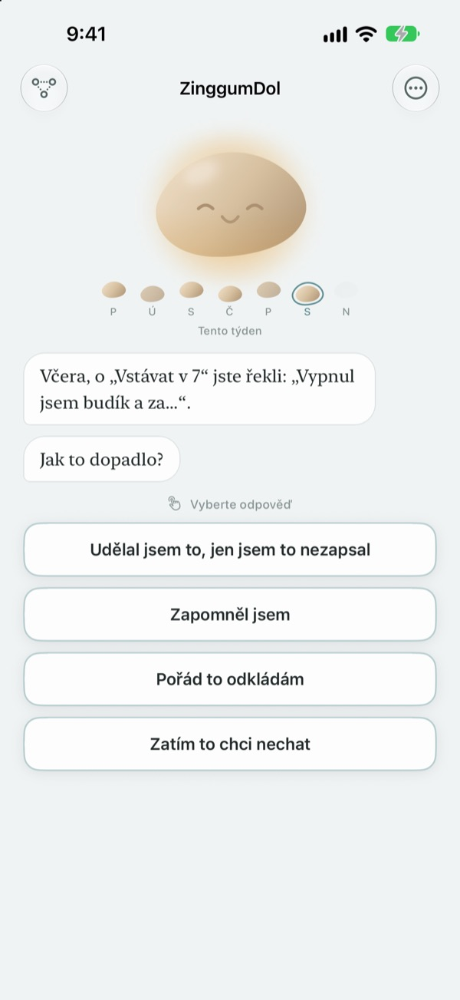
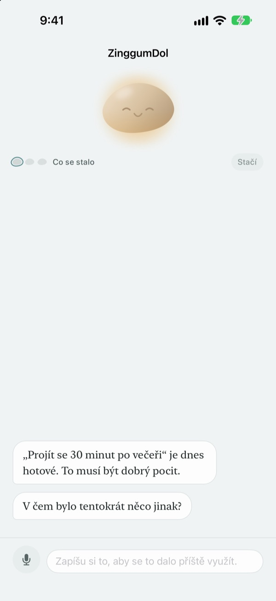
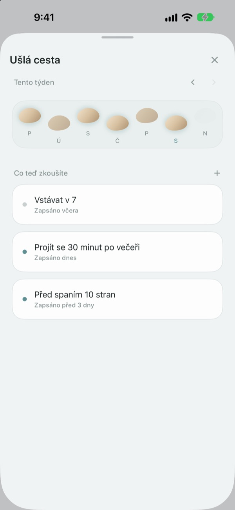
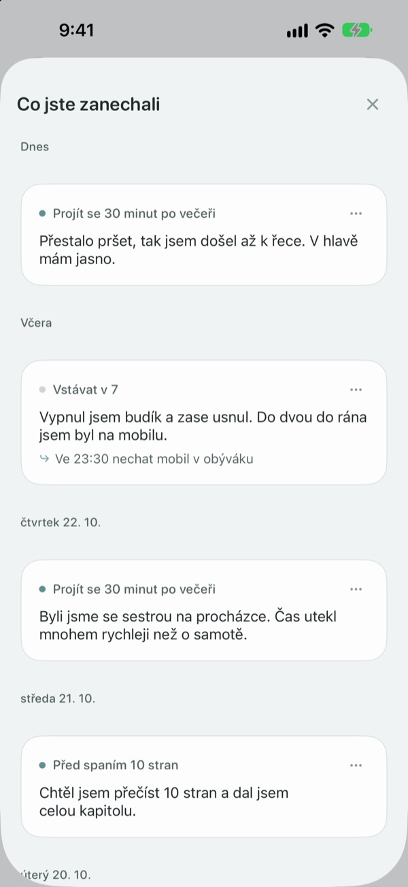

Šlápnout vedle neznamená
spadnout do potoka
Ve dni, kdy cíl nesplníte, promluví oblázek první. Ptá se, co se stalo, ne co jste udělali špatně, a vrátí vám události a pocity každé zvlášť.
Rozhovory, záznamy i ušlá cesta jsou zdarma. Bez účtu a bez reklam.

Promluvte si s oblázkem
Dnes večer jste se chtěli jít projít, ale nevyšlo to. Klepněte na odpověď nebo napište vlastní a oblázek odpoví stejně jako v aplikaci.
Vyčítáte si, když den nevyjde podle plánu?
Večer po vynechaném tréninku vás nejspíš jako první napadne „co je se mnou špatně?“. Při bližším pohledu ale byly přesčasy, pršelo a byli jste vyčerpaní. ZinggumDol se zvlášť zeptá, co se stalo a jak se cítíte, a položí obojí vedle sebe. Když uvidíte, že to byly okolnosti, a ne vaše vůle, najdete další malý krok snáz.
Oblázek promluví první
Nastavte si cíl a oblázek bude sledovat dny, kdy se to povedlo, i dny, kdy jste uvízli. Když vám den uteče, zeptá se „co se stalo?“ místo „proč ne?“ a pamatuje si, co jste mu řekli minule.
Když se vám nechce psát, řekněte to nahlas. Řeč se rozpozná přímo v zařízení a nahrávky se nikdy neukládají.

Vaše dny jako kameny přes potok
Každý týden leží jako řada kamenů. Dny, na které jste nešlápli, tam zůstávají také; nic se nemaže.
I s mezerou nebo dvěma vidíte, že cesta pokračuje.

Přečtěte si znovu, co jste napsali
Co se stalo, jak jste se cítili a co zkusíte příště, se řadí podle data. Přečtěte si den, kdy jste uvízli podobně, a uvidíte, co pomohlo.
Widget ukáže slovo od oblázku na ploše a připomínka ve zvolený čas vás pozve ohlédnout se za dnem.

Začátek ve třech krocích
- 1
Zapište jeden cíl
Třeba „Projít se 30 minut po večeři“.
- 2
Večer otevřete aplikaci
Oblázek se zeptá, jaký byl den. S připomínkou nezapomenete.
- 3
Klepněte nebo napište odpověď
Kdykoli můžete skončit volbou
Zatím to chci nechat.
Jak rozhovor probíhá
- Co se stalo
- Jen fakta: co vám vstoupilo do cesty
- Pocity
- Jak se teď cítíte, na stupnici o pěti stupních
- Ohlédnutí
- Oblázek vám vrátí, co se stalo, a pocity zvlášť
- Další krok
- Sami si vyberete něco malého, stačí pět minut
- Shrnutí
- Ve opravdu těžký den se už na nic neptá a navrhne odpočinek
Skončit můžete kdykoli a to, co jste do té doby řekli, zůstane uložené.
Rozhovory a záznamy jsou zdarma. Pro, když chcete víc.
Zdarma
- Všechny rozhovory s oblázkem
- Až tři cíle
- Mluvit místo psaní
- Ušlá cesta a vše, co jste napsali
- Widget a denní upozornění
- Zámek kódem
ZinggumDol Pro
- Tolik cílů, kolik chcete
- Výběr ze šesti povrchů oblázku
- Export záznamů do textového souboru
Koupíte jednou a máte navždy. Nejde o předplatné.
Uprostřed rozhovoru se nikdy neobjeví platební obrazovka. Na novém zařízení nebo po přeinstalaci klepněte v Nastavení na Obnovit nákupy.
Časté dotazy
Musím vysvětlovat každý vynechaný den?
Ne. Kdykoli klepněte na Zatím to chci nechat a rozhovor hned skončí. Co jste řekli, zůstane uložené, takže můžete pokračovat později.
Udělal(a) jsem to, ale aplikace tvrdí opak.
Klepněte na Udělané, jen nezapsané. Oblázek opravu přijme a místo toho se zeptá, co pomohlo. Co fungovalo, si uloží a připomene vám to, až příště uvíznete.
Kam jde to, co řeknu nahlas?
Vaše řeč se převede na text přímo v zařízení a nahrávka se nikdy neukládá. Na podporovaných zařízeních se věty navíc uhladí, aby se lépe četly, i to v zařízení.
Kolik cílů můžu mít?
Tři zdarma. Když s nějakým skončíte, uvolněte místo volbou Pustit v Ušlé cestě. Pro víc než tři potřebujete ZinggumDol Pro.
Je ZinggumDol Pro předplatné?
Ne. Zaplatíte jednou a je vaše. Na novém zařízení nebo po přeinstalaci klepněte v Nastavení na Obnovit nákupy.
Může můj deník číst někdo jiný?
Žádný účet neexistuje. Záznamy jsou jen ve vašem zařízení a ve vašem vlastním iCloudu a v Nastavení můžete aplikaci zamknout kódem. Co napíšete, se nikdy neposílá vývojáři. Anonymní statistiky používání můžete v Nastavení vypnout.
Jak změním čas upozornění?
V Denní upozornění v Nastavení ho zapnete či vypnete a zvolíte čas.
Připomíná mi oblázek i to, co se povedlo?
Ano. Pamatuje si, co vám pomohlo, a v těžký den vám připomene něco, co se vám nedávno podařilo.
Jak všechno smažu?
V Nastavení klepněte na Smazat všechny záznamy. Cíle a záznamy zmizí natrvalo, i na dalších zařízeních propojených přes iCloud. Nastavení a nákupy zůstanou. S Pro si můžete předtím uložit kopii volbou Exportovat záznamy.
Jak vás kontaktovat?
Přes „Odeslat zpětnou vazbu“ v Nastavení aplikace nebo e-mailem na adresu níže.
Dotazy nebo připomínky? Napište na leeo@kakao.com.